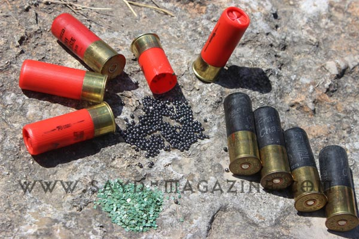

الأرشيف — كل المقالات (704)
8 تشرين الأول 2020 · صيد بري
من بين جميع التحديات الاخلاقية لتصوير الطيور البرية، تعتبر المسافة المناسبة هي الهدف الأكثر صعوبة لدى المصور ؛ فالجميع يريد الاقتراب قدر الإمكان من الطير للحصول على لقطات رائعة، م…
5 تشرين الأول 2020 · جعبة المنوعات
حشرة Deroplatys truncata هي إحدى أنواع السرعوف المعروف ب"فرس النبي" من عائلة Mantodea، ينتشر هذا النوع في بلاد جنوب شرق آسيا، يتميز كغيره من السراعيف بتمويه يندمج به مع محيطه فيخت…
4 تشرين الأول 2020 · شعر وفن
الصيد بالشعر أجمل أنواع الصيد لانه الأصعب.. إذ ليس سهلا أن تقنص بالكلام فكرة جديدة مبتكرة وترديها على اوراقك خالدة الروح.. الا اذا كنت صيادا محترفا وتمتللك تفعيل حواسك بمهارة .. ا…
16 أيلول 2020 · أخبار
اصدرت وزارة البيئة اللبنانية قرارا بفتح موسم الصيد لسنة 2020/2021 وجاء القرار على الشكل الاتي: تعلن وزارة البيئة عن البدء ابتداءً من 17/9/2020 بتلقي طلبات رخص الصيد البري عبر جميع…
14 أيلول 2020 · شريط
قبل يوم واحد من موسم الصيد لسنة 2020/2021 يقف الصياد اللبناني المسؤول - الذي لبى نداء التنظيم وتطبيق القانون ليستعيد مكانة كرامة هوايته - بدون رخصة صيد، وبلا قرار لفتح الموسم ...…
3 آب 2020 · شعر وفن
كي لا يلتبس الأمر على أحد، وكي لا يسقط الناس في فخ الدمج بين الصياد والقوّاص، رسم الفنان الصياد المختارهادي يزبك الحدّ الفاصل بريشته من خلال لوحتين مائييتين، توضح كلّ منها ملامح ك…
2 تموز 2020 · رماية
في الماضي كانت رياضة الصيد ذو طابع ذكوري، ولكن في السنوات الأخيرة، ظهر تحوّل مثير حيث أخذ عدد لا يصدّق من النساء بتعلم الصيد والرماية. وباتت صناعة أكسسوارات وملابس الصيد الخاصة با…
24 حزيران 2020 · جعبة المنوعات
الطبسون يعُرف علميًا باسم Procavia capensis وهو حيوان خجول ذو طبيعة غامضة، يفضل الإختباء في الشقوق والجحور الصخرية بعيدًا عن البشر وهو من الثدييات الصغيرة ولا ينتمي إلى فصيلة القو…
23 حزيران 2020 · جعبة المنوعات
هل فكرت وانت تستمع بأكل الشوكولا أن هناك حشرة هي السبب في متعتك هذه؟ طبعا لا.. ولكن يجب ان تعرف هذه المعلومة بأن جميع انواع الشوكولا في العالم يعتمد على حشرة تدعى ذبابة الشوكولا C…
23 حزيران 2020 · سياحة بيئية
هل نحن في زمنٍ توجُّهنا فيه الأرض نحو حياةٍ صحيّةٍ حيث يمكن للبشريّة العيش بتناغمٍ أكثر مع البيئة ودورة الحياة وعناصرها وفصولها ؟ إنّها بالتَّأكيد من إحدى تأثيرات كورونا الإيجابية…
23 حزيران 2020 · جعبة المنوعات
شرشور الكرز المعروف محليا بالكرمب او ديك الصلنج، عصفور متوسط الحجم يزور لبنان بكميات شحيحة و متفاوتة خلال هجرة العبور و في الشتاء بين منتصف تشرين الاول ومنتصف نيسان. الكرمب عصفور…
17 حزيران 2020 · قوانين
يجب على الصياد معرفة ما هو وضعه تجاه شركة التأمين عند حصول حادث... فهل تغطي له شركة التأمين جميع حوادث الصيد؟ وفي كل وقت؟ أوجد القانون شروط لتغطية شركات التأمين حوادث الصيد. وهذه…

17 حزيران 2020 · عتاد وسلاح الصيد
لا بدّ لنا من الوقوف عند الغلاء الفاحش في البلد وما آلت إليه الظروف الاقتصادية الراهنة، حيث أدّى ارتفاع سعر صرف الدولار إلى غلاء فاحش في كل أنواع البضائع، ولا سيما الخرطوش. لتلامس…
12 حزيران 2020 · شعر وفن
من ألوانها تعشق أعمالها.. عصفورة الألوان.. المليئة بالفرح والموهبة والثقافة والإبداع. مهندسة الديكور الشغوفة برسم الطير والفرس وكل ما تراه عيناها من حيوانات ومشاهد طبيعية تنقلها إ…
12 حزيران 2020 · فروسية
فارس طموح بطل لا ينكسر، يسير على درب حلمه دون تردد أو خوف، لأنه مؤمن بالوصول إلى الأعلى والأبعد والأرقى. وبالرغم من كل المحاربات الضيقة التي أرادت هزيمة نفسه، صمد وحقق ووضع بصمة ف…
12 حزيران 2020 · جعبة المنوعات
شهدنا في الأشهر السابقة ارتفاعاً كبيراً في سعر صرف الدولار مقابل الليرة، الأمر الذي أدى إلى ارتفاع جنوني في أسعار جميع السلع ولكن بنسبٍ متفاوته، فكيف تأثر سعر خرطوش الصيد؟ قبل ارت…
12 حزيران 2020 · صيد بري
من مصادفة إلى توّرُط إلى احتراف.. كانت رحلة الصياد المسؤول والمصوّر المبدع سامر عازار، الذي نقلته مصادفة رؤيته صورة لعش طائر قرقف بنديولين (EURASIAN PENDULINE TIT)، كان قد نشرها ف…
11 حزيران 2020 · رماية
الجنسية: لبناني الإسم والشهرة: رالف عراج محل وتاريخ الولادة: ضهر الصوان- 1988/9/11 تاريخ دخول عالم الرماية: 2015 نوع الرماية: Olympic Trap نوع سلاحك: جفت بيريتا DT11 النادي المنتس…
5 حزيران 2020 · شعر وفن
لوحة انطباعية من أعمالي. ألوان أكريليك على قماش، قياس العمل (120×90) عين الضيعة أو نبع المياه في وسط القرية ، كان الملتقى العام لجميع أهالي القرية، وخاصة للنسوة اللواتي كانت تقع ع…
5 حزيران 2020 · صيد بري
الذين يتنفّسون المغامرة يولدون من رحم العشق للطبيعة. وينمو مزاجهم على نبض التحدّي، ولا يخضعون لمقاييس التردد والإنكفاء والخوف والإنزواء. الصيّادة المغامِرة سيرينا ريشاني من هذه ال…
28 أيار 2020 · رماية
فوائد المشاركة في أنشطة الرماية هي صحيّة، جسديّة وعقليّة. فإن الرماية بمختلف أنواع السلاح يُعزّز الانضباط الجسدي والعقلي لدى الرامي. إليك بعض مزايا الرماية: 1. التنسيق بين اليد وا…
28 أيار 2020 · صيد بري
ليس صيادًا عاديًّا ولا شخصًا مرّ في الحياة دون بصمة، فهو الحارس الظل لفخامة الرئيس الراحل كميل شمعون، في كل خطوة له وتنفس. وقد تعلمّ الصيد وآدابه على يديه، فنشأ على حب الطبيعة واح…
23 أيار 2020 · فروسية
للطبيعة نوع من الناس يتنفس وجودها بعينيه ، ويتوغّل في خلايا جمالها بهدوء نسمة، ويغامر فارساً مقتحماً ميادينها بجرأة حب لا هوادة فيها.. بيار داغر فنان من طين الأرض وطينة العشق والا…
22 أيار 2020 · جعبة المنوعات
طائر المينا (Common myna) طائرٌ غازي يعود أصله إلى بلاد جنوبي آسيا، صنّفته IUCN على أنه من أشرس الطيور الغازية في العالم، يتميز بتأقلمه على الحياة في المدينة حيث يتكاثر بسرعة وينا…